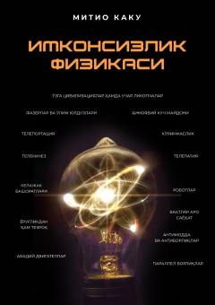

IFIlmiy fantastikadagi g'oyalarning zamonaviy fizika nuqtai nazaridan bajarilish imkoniyatlari haqida kitob.
Ushbu kitobda taniqli fizik va olim Michio Kaku ilmiy fantastikada uchraydigan ko'rinmaslik, teleportatsiya va telepatiya kabi hodisalarning ilmiy asoslari hamda kelajakda amalga oshish ehtimolini tahlil qiladi. Muallif imkonsiz tuyulgan g'oyalarning zamonaviy fizika nuqtai nazaridan qanchalik real ekanligini sodda va tushunarli tilda tushuntirib beradi.